STAT 236 · Generated 31 October 2026 · Reproducible analysis
School-board meetings: visual atlas
Thirteen figures cover coverage, policy mentions, time trends, cleaning effects, vocabulary tests, geography and baseline voting. All figures have PNG/PDF exports and reproducible scripts.
Jupyter notebook · Reproduction guide · Data tables and audits are generated locally (not committed)
Read methods and limitations before interpreting
These figures combine three explicitly labeled sources: new version-2 phrase counts for all 83,366 primary-cohort recordings; existing controlled before/after LDA results; and existing earlier-pipeline vocabulary/HC results. No new LDA fitting or v2 HC rerun is claimed.
New phrase measurement uses v2 core tokens, including stopwords and numbers. Counts are within fixed 1,000-token blocks, with a final block under 200 tokens merged. Dictionaries are searched independently so subjects may overlap. Rates are mentions per 10,000 core tokens, not the earlier alphabetic-token denominator. No-COVID excludes whole blocks with candidate COVID terms; it is not causal control. Dictionaries are exploratory, not validated policy or stance classifiers. Ads, repeated-caption artifacts, played media and ASR confusions remain possible.
38 recordings with exactly one explicit title year contradicting the recorded meeting year are excluded from new substantive panels (83,328 recordings remain). Dates otherwise retain the source meeting_date; this is not full date validation. The period panel requires at least four recordings and three observed quarters in each of 2018, 2019, 2022 and 2023. The quarterly panel is fixed to districts present in every one of the 24 quarters. Weighting is equal meetings within district-year/quarter, equal years within period, and equal districts. Intervals are pointwise and exploratory, not simultaneous discovery guarantees.
Geography uses exact zero-padded NCES LEAID matches to the 2020 relationship file. County comparisons use only single-county districts; multi-county/unmatched districts are audited. A single fixed crosswalk does not resolve historical boundary changes or original district attribution errors. State summaries allow multi-county districts whose counties all lie in one state. Maps show the contiguous US; tables retain other matched states. Gray is missing/unrepresented, not zero. Rates represent observed districts, not every resident or meeting in the county/state.
Political context is 2016 Republican votes divided by Democratic plus Republican presidential votes from MEDSL's official GitHub release. It is a pre-period county measure, not district election returns or speaker ideology. Scatterplot regression intervals cluster by state; group trajectories resample states within each political group (499 draws, fixed seed). These are unadjusted descriptive associations; group composition and unobserved confounders remain. Each political trajectory uses the same districts across all quarters. Few-cluster intervals can be unstable.
LDA perplexity is compared only within a representation. NPMI uses the existing shared held-out reference. HC plots use earlier processing and show exploratory standardized changes; all original global-test p-values reached the 0.0005 bootstrap resolution floor. Neither global-test statistic ratios nor raw p-values rank test power.
- Where the six-year record is complete—and where it is not
- Which policy phrases became more frequent?
- Six subjects across all 24 quarters
- Cleaning changed the topics, but did not improve coherence
- More topics improve prediction within each representation
- Some topics survive cleaning; others change substantially
- The vocabulary shift includes policy, pandemic and transcription signals
- All three global tests detect vocabulary change
- Geographic coverage and baseline political context
- Where subject mentions changed in the observed panel
- Within-state summaries of the observed district changes
- Do changes differ with the surrounding political environment?
- Subject trajectories by pre-period county voting
Where the six-year record is complete—and where it is not
Source: v2 primary cohort, 2018–2023. 83,328 recordings after 38 title-year conflicts excluded. Gray = no eligible recording; not zero discussion.
PDF · PNG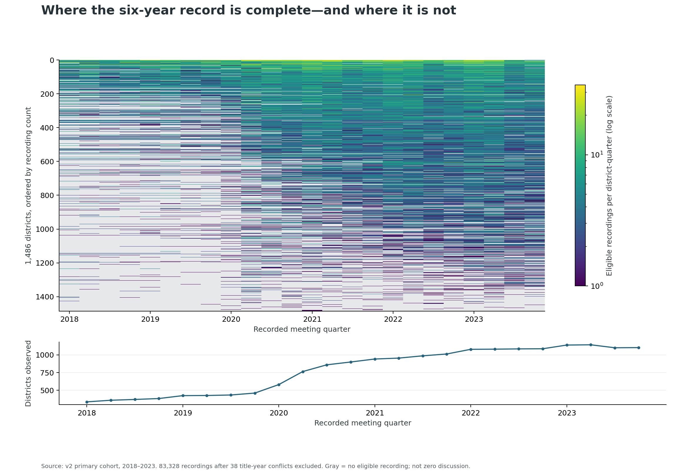
Which policy phrases became more frequent?
Source: v2; 2022–2023 minus 2018–2019; 273–273 eligible districts. Equal meetings/year/district weighting; pointwise 95% t intervals. Mentions, not stance; panels use different x scales.
PDF · PNG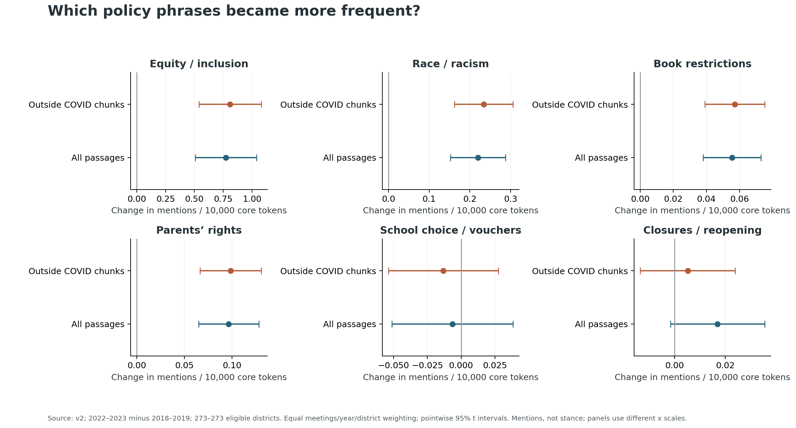
Six subjects across all 24 quarters
Source: v2, 2018–2023; fixed panel of 186 districts with ≥1 eligible recording every quarter. Equal district weight; pointwise district-t 95% intervals; shared shocks not modeled.
PDF · PNG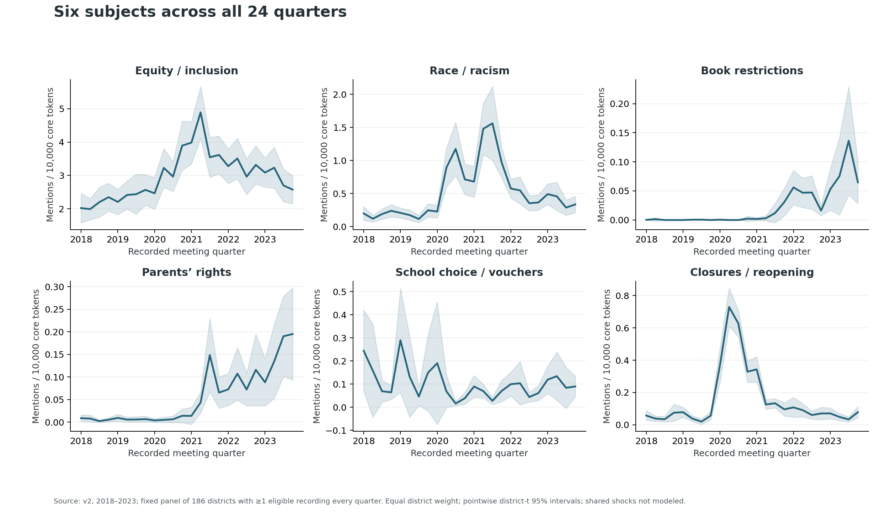
Cleaning changed the topics, but did not improve coherence
Source: completed paired LDA fits; same 83,366 recordings and split, 2018–2023. Shared-reference NPMI; one seed / training pass. Higher values indicate greater coherence or diversity.
PDF · PNG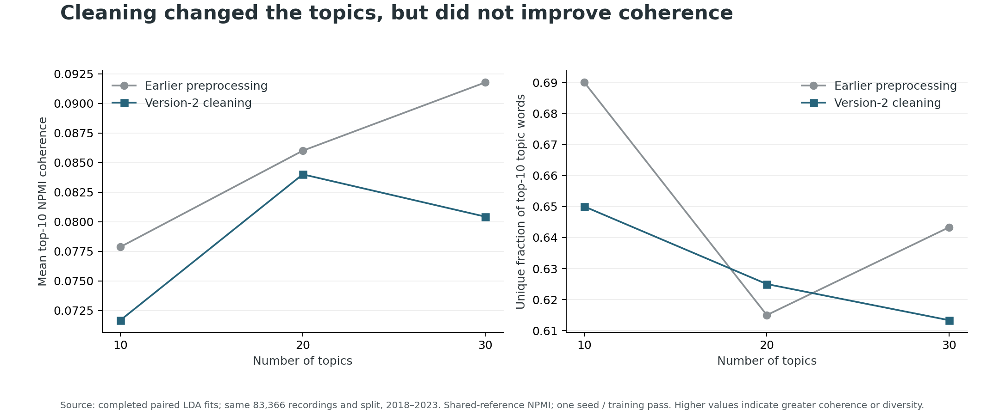
More topics improve prediction within each representation
Source: paired LDA, 2018–2023. Lower is better WITHIN each panel; vocabularies differ, so cross-panel perplexity levels do not measure the effect of cleaning.
PDF · PNG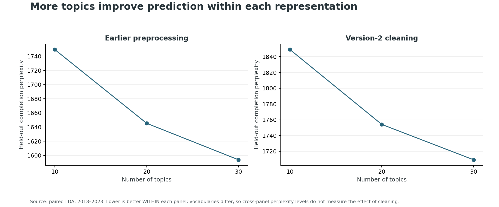
Some topics survive cleaning; others change substantially
Source: 30-topic paired fits. Forced one-to-one matching is descriptive; low similarity is not evidence of topic equivalence. Food-topic examples include ads; technology examples include repetition.
PDF · PNG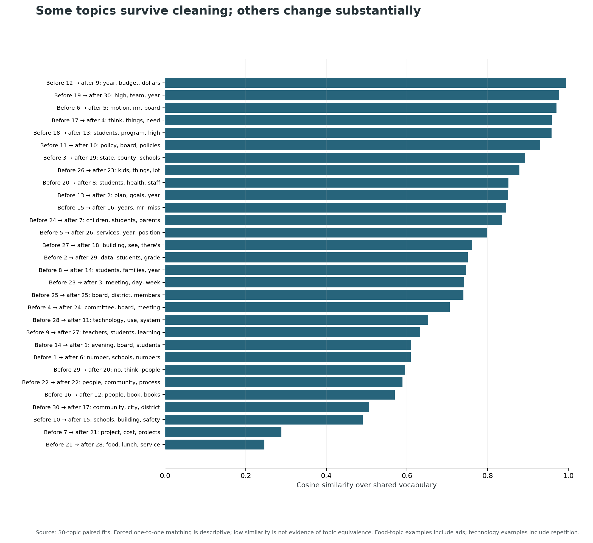
The vocabulary shift includes policy, pandemic and transcription signals
Source: EARLIER preprocessing, 273 matched districts, 11,804 tested words. Exploratory standardized evidence, not FDR-controlled discoveries. This is not a v2 HC rerun.
PDF · PNG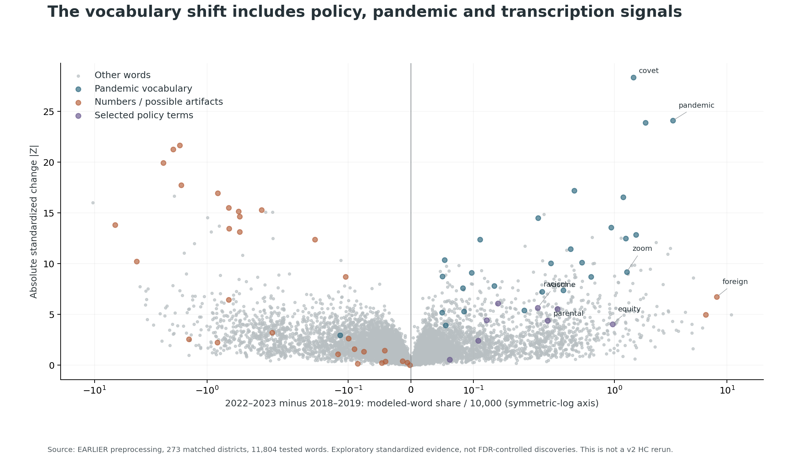
All three global tests detect vocabulary change
Source: earlier pipeline, 2018–2019 vs 2022–2023, 273 districts; 1,999 bootstrap draws. All p values reach 0.0005 floor. Ratios do not rank test power.
PDF · PNG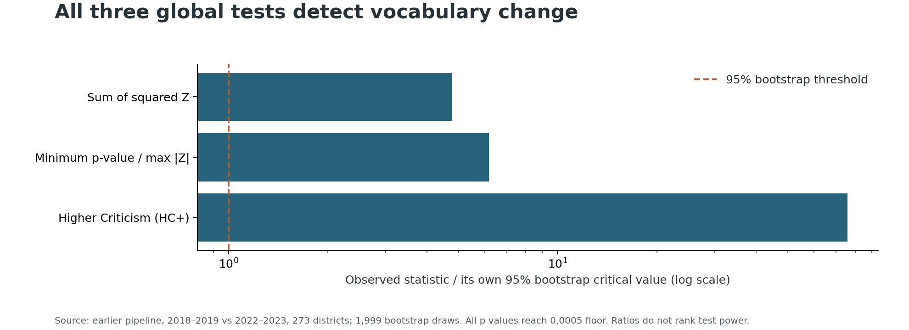
Geographic coverage and baseline political context
Sources: v2 / NCES 2020 district–county links / Census 2020 boundaries / MEDSL 2016 returns. Contiguous US shown. Gray = no linked observations or missing votes; not zero. County votes are not district or speaker votes.
PDF · PNG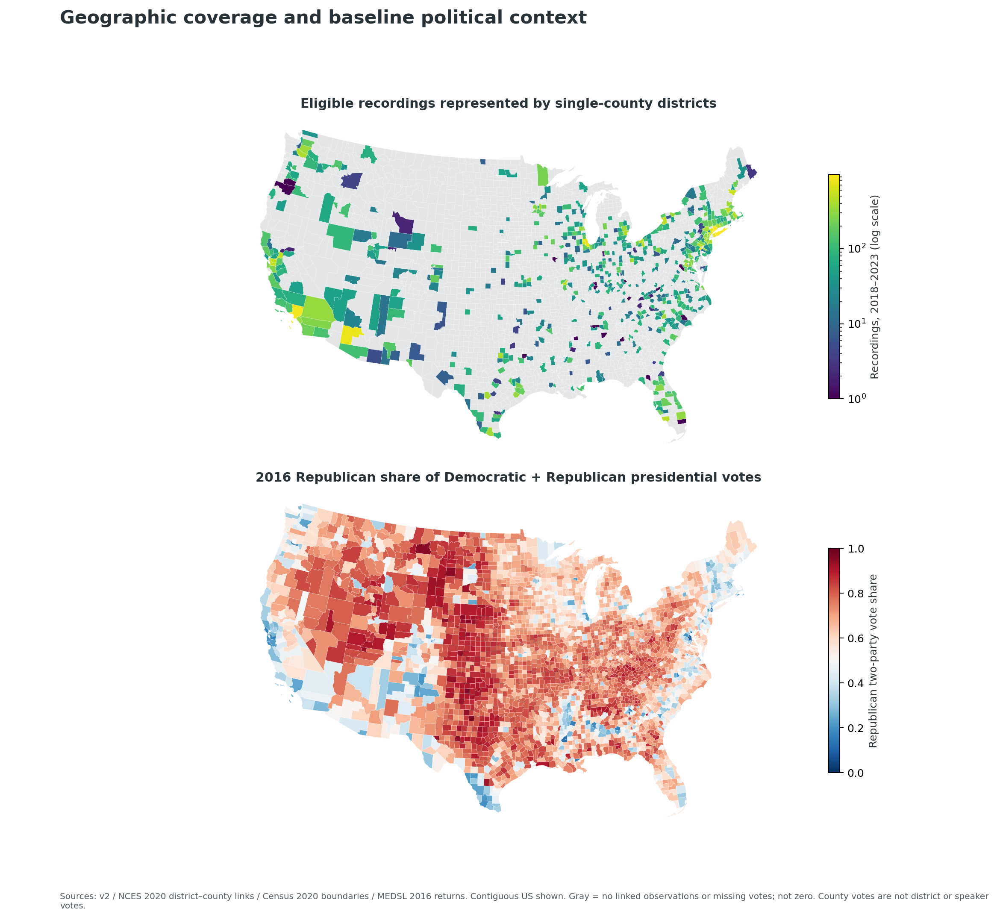
Where subject mentions changed in the observed panel
Source: v2 matched-period panel; 2022–2023 minus 2018–2019; mean across linked single-county districts. Contiguous US; gray = no eligible panel district. Different color scales; no population weighting or county-wide representativeness.
PDF · PNG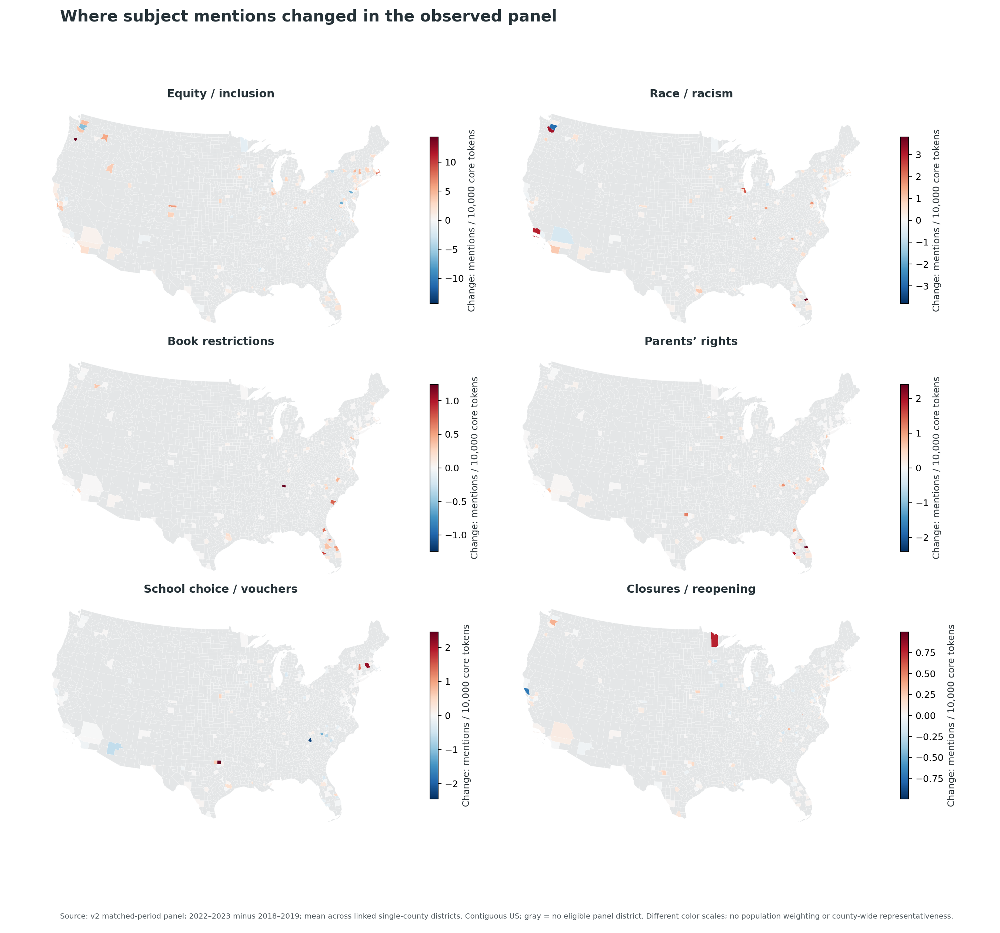
Within-state summaries of the observed district changes
Source: v2, 2022–2023 minus 2018–2019; NCES 2020 state linkage. States with ≥3 panel districts shown. Equal district weight; pointwise t intervals, no adjustment for shared state shocks; not state population estimates.
PDF · PNG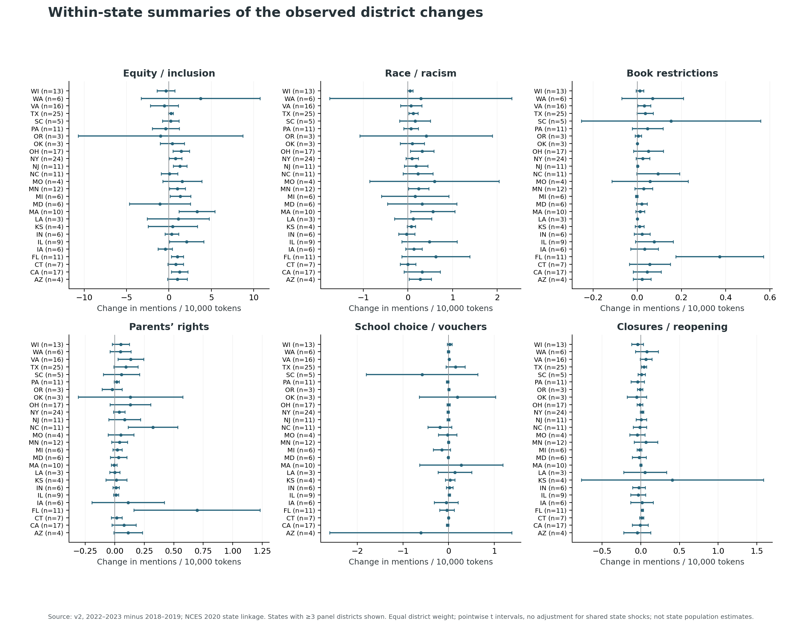
Do changes differ with the surrounding political environment?
Source: v2 early/late contrasts + MEDSL 2016; 215 single-county districts. Points = districts; OLS mean bands use state-clustered 95% intervals. Unadjusted exploratory associations; not causal or speaker-level ideology.
PDF · PNG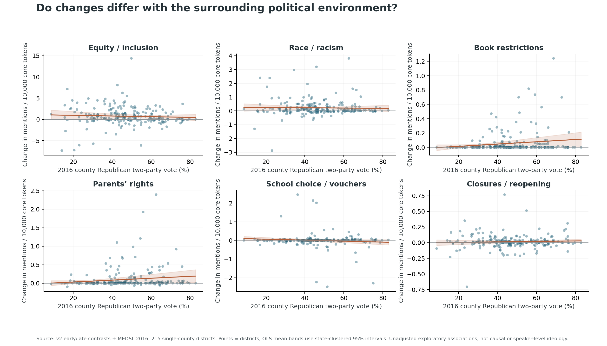
Subject trajectories by pre-period county voting
Source: v2 / MEDSL 2016; 151 linked districts present every quarter, 2018–2023. Fixed groups; equal district weight; 499 within-group state-cluster bootstrap draws, pointwise 95% bands. Descriptive, no covariate adjustment.
PDF · PNG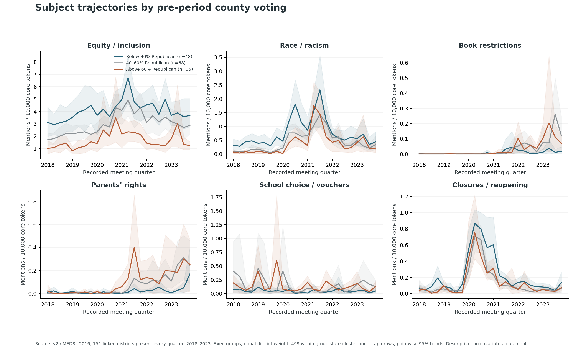